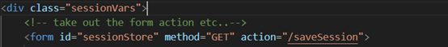
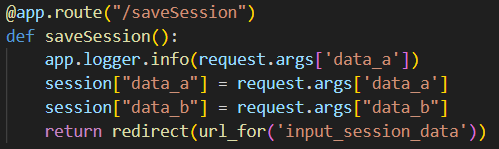
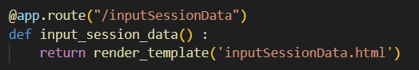
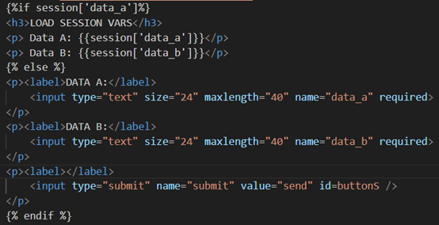
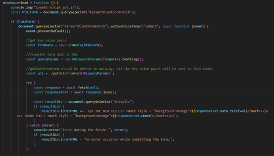
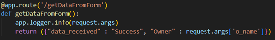
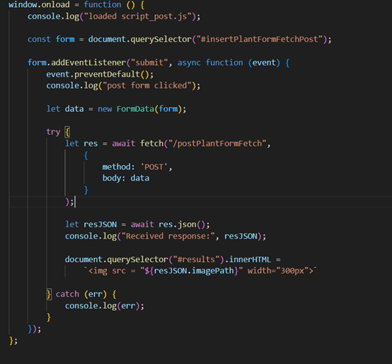
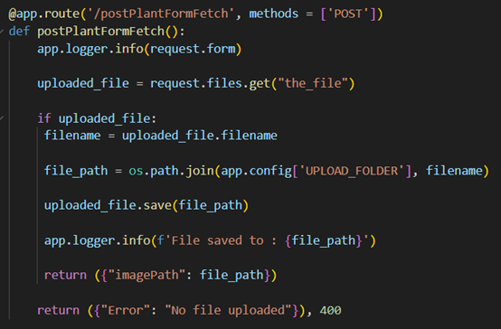

Week 5:October 27th
This week, we continued learning about Flask, focusing mainly on Session and GET/POST methods.
Session:
From my understanding, a session is used to store a small amount of user information as an identifier, allowing the website to recognize whether the user is visiting for the first time. The basic code implementation is as follows:
inputSessionData.html
main.py
 
inputSessionData.html

The specific execution process of the above code is as follows:
On the web page (inputSessionData.html), the user inputs information, which is then transmitted to the backend (main.py) through the GET
method.
The backend can either simply record the information or process it further — such as modifying or extracting the data as
needed — and finally return the result to the web page via a return statement for display.
GET/POST:
GET and POST are two commonly used request methods, both serving as data transmission mechanisms between the client and the server. When we perform a web search, the URL often contains a suffix like search?q=your_search_term, which is an example of the GET method. However, this approach may expose sensitive information in the URL. Therefore, the POST method is generally used as a more secure alternative.
js file(GET)
main.py(GET)
Use request.args['XXX']
-------------------------------
js file(POST)
main.py(POST)
Use request.form.get['xxx'] to get text data
Use request.file.get['xxx'] to get images data
It is important to note that the transmission method needs to be specified both in the JavaScript file and in main.py; by default, it is GET. In the JavaScript file, the fetch function is not only used to receive responses, but also to send requests.